편집기 없이 클로드만으로 만든 영상
발표자는 영상 첫 2분이 전부 Claude Code로 만든 결과물이라고 밝혀요. 영상 편집기는 한 번도 열지 않았대요. 색감, B롤 배치, 화면 위 글자와 요소, 전환 효과까지 모두 Claude가 짠 코드에서 나왔어요.
아래 장면에서는 Gmail, Slack, Google 캘린더, WhatsApp 같은 앱 아이콘이 알림 숫자를 단 채 인물 둘레에 떠 있어요. 발표자는 인물을 배경에서 따로 떼어 낸 덕분에 요소를 사람 뒤쪽에 끼워 넣을 수 있었다고 설명해요.
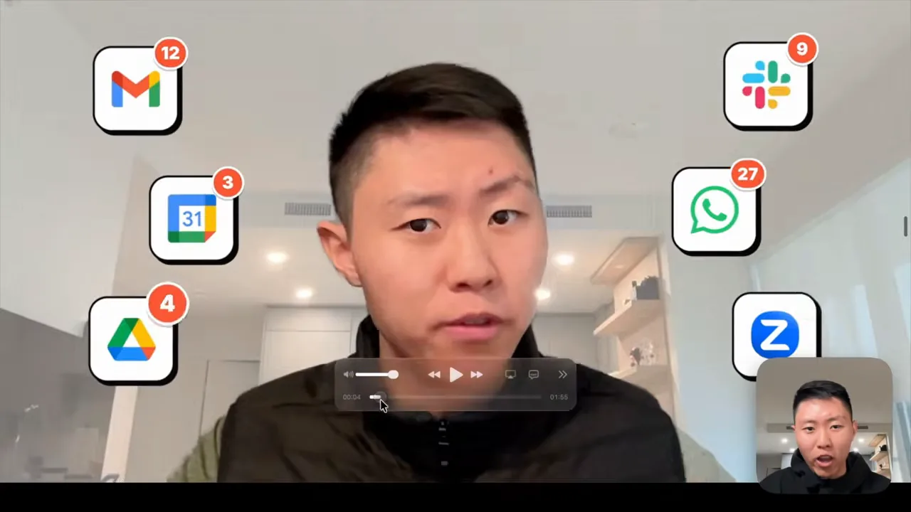
그는 이 과정을 스킬로 묶어 뒀고, 같은 스킬을 쓰면 똑같은 장면을 재현할 수 있다고 해요. 이어서 경우를 둘로 나눠요. 왼쪽 'CASE 1'은 영상·이미지·B롤이 있을 때, 오른쪽 'CASE 2'는 오디오만 있을 때예요. 두 화살표가 모두 가운데 Claude로 모여요.
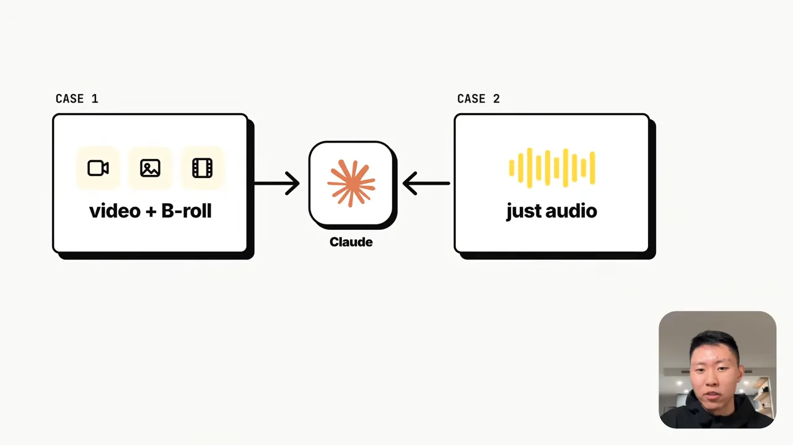
코드가 영상을 만드는 네 단계
발표자는 Remotion, HyperFrames 같은 도구를 다 써 봤다고 해요. 그래도 뒤에서 일어나는 일은 결국 그림 하나로 정리된대요. 아래는 그가 Codex 창에서 GPT(Generative Pre-trained Transformer)로 그린 'How code makes a video' 다이어그램이에요. 위쪽에 '1. PLAN'부터 '4. PLAY'까지 네 단계가 있고, 가운데 2단계가 파란 Browser path와 초록 Python path로 갈라져요.
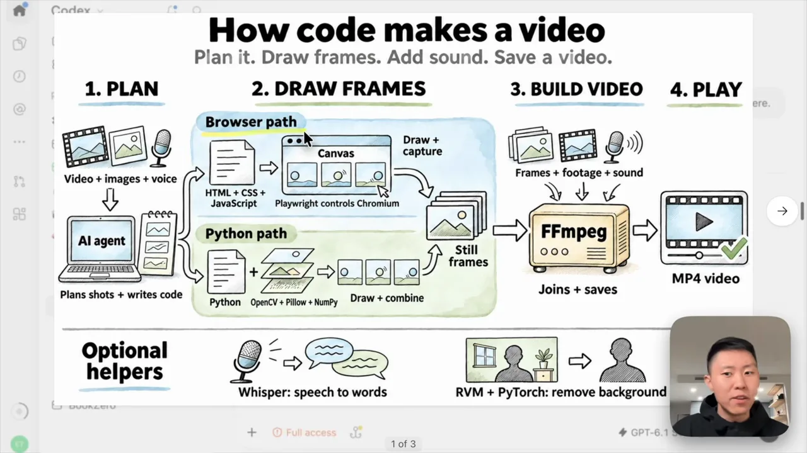
다이어그램의 글자가 작아서 단계별로 옮겨 적었어요.
| 단계 | 하는 일 | 쓰는 도구 |
|---|---|---|
| 1. 계획 | 영상·이미지·음성을 받아 장면 배치와 애니메이션을 정하고 코드를 써요 | AI 에이전트(Claude Code) |
| 2. 프레임 그리기 — 브라우저 경로 | HTML(HyperText Markup Language)로 화면을 짜고, 브라우저를 조종해 Canvas를 그리고 캡처해요 | HTML·CSS(Cascading Style Sheets)·JavaScript, Playwright, Chromium |
| 2. 프레임 그리기 — Python 경로 | 그림을 직접 그리고 겹쳐서 정지 프레임을 만들어요 | Python, OpenCV, Pillow, NumPy |
| 3. 영상 만들기 | 프레임·촬영본·소리를 이어 붙여 저장해요 | FFmpeg |
| 4. 재생 | 완성 파일이 나와요 | MP4 |
| 보조 도구 | 음성을 글자로 바꾸고, 인물 배경을 지워요 | Whisper, RVM(Robust Video Matting) + PyTorch |
앞 절에서 본 '인물 뒤에 요소 넣기'는 맨 아래 보조 도구 중 RVM + PyTorch가 맡는 배경 제거 덕분이에요. 사람만 오려 내야 그 뒤에 아이콘을 깔 수 있거든요.
발표자가 핵심 도구로 따로 짚는 건 FFmpeg예요. 아래 슬라이드처럼 frames와 footage 두 줄이 FFmpeg 하나로 들어가요. 어떤 도구를 쓰든 마지막엔 FFmpeg가 프레임, 촬영본, 소리를 한 영상으로 묶는다는 거예요.
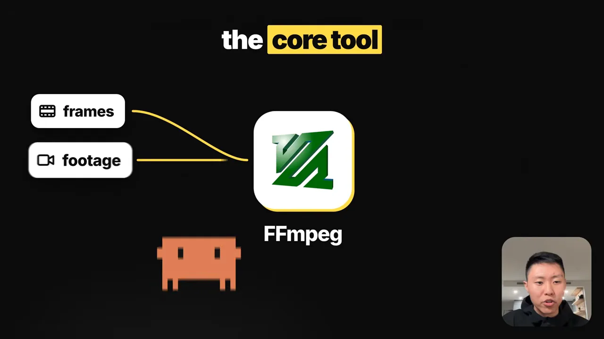
소재가 있을 때: Eric Edit 스킬과 Suno
발표자는 이 흐름을 Eric Edit라는 스킬로 묶어 자기 커뮤니티에 zip 파일로 올려 뒀어요. 압축을 풀어 Claude Code에 넘기면 바로 쓸 수 있대요. 아래 게시글의 Case 1 부분이 이 스킬의 사용법이에요.
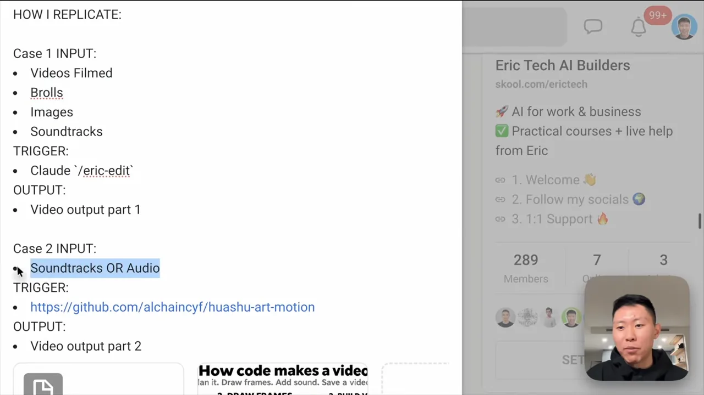
- 소재를 모아요 — 직접 찍은 영상, B롤, 넣고 싶은 이미지, 사운드트랙.
- Claude에서
/eric-edit를 실행해요 — 소재만 넘기고 스킬을 부르면 돼요. 영상 앞부분 2분과 비슷한 품질의 영상이 나와요 - 마음에 안 들면 다른 버전을 요청해요 — 같은 소재로 여러 변형을 만들 수 있어요.
스킬이 맡는 일은 아래 슬라이드의 세 단어로 요약돼요. transitions(전환), animations(애니메이션), edits(편집)를 맞춰서 소재를 한 영상으로 엮는 거예요.
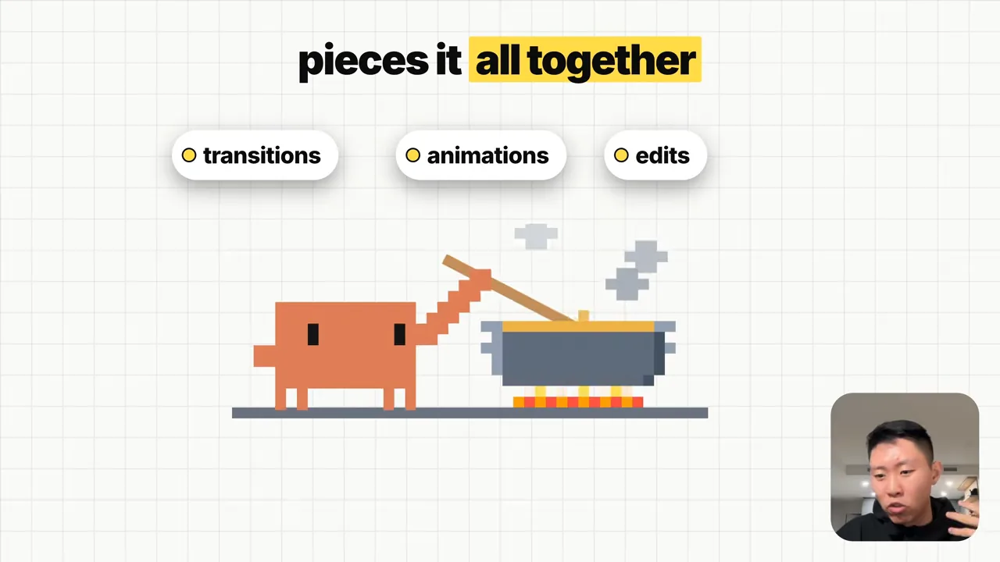
배경 음악은 Suno로
배경 음악은 처음에 Claude에게 YouTube Studio 음악을 찾아 보게 했대요. 그런데 마음에 드는 곡이 없었어요. 그래서 Suno로 곡을 만들어 내려받고, 그 파일을 Claude에 넘겼어요. 아래는 Suno 작업 화면이에요. 왼쪽에 가사(Lyrics)를 쓰는 칸이 있고, 오른쪽 목록에 'Claude Code, New Road' 같은 생성된 곡이 쌓여 있어요.
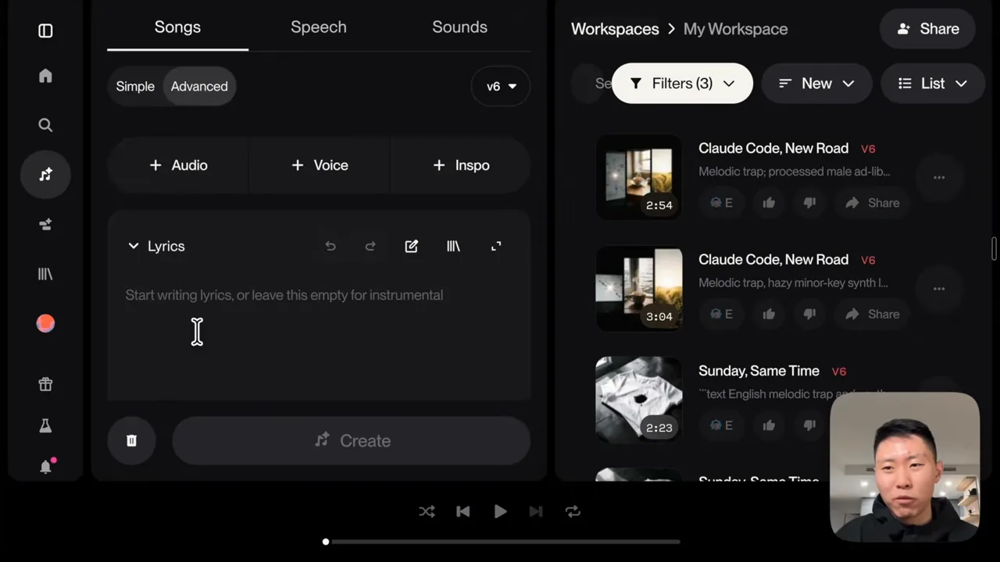
발표자는 AI로 만든 곡이라 저작권 걱정이 없다고 말해요. 다만 이 말은 플랜에 따라 달라져요.
소재가 없을 때: huashu-art-motion 스킬
촬영본도 B롤도 없이 Claude가 처음부터 끝까지 다 만들게 하고 싶을 때가 있어요. 뮤직비디오나 애니메이션 같은 경우예요. 발표자가 GitHub에서 여러 스킬을 써 보고 가장 마음에 들었다고 꼽은 게 huashu-art-motion이에요. 아래 저장소 카드를 보면 alchaincyf 계정의 저장소이고, 별 6.2k, 포크 617, MIT(Massachusetts Institute of Technology) 라이선스가 붙어 있어요.
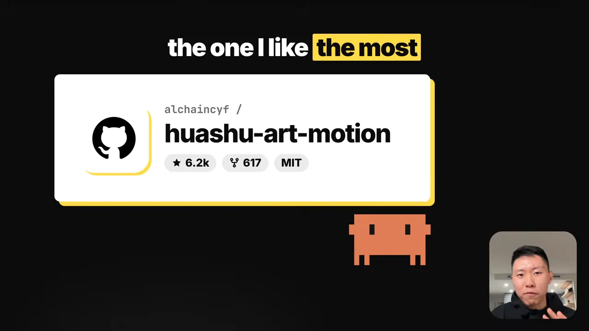
이 스킬의 강점은 테마 수예요. 왼쪽 큰 글씨가 35가지 넘는 테마를 말하고, 오른쪽 썸네일에는 Mario라고 적힌 8비트 게임풍과 수채화풍 장면이 보여요. 발표자는 일본풍 수채화 같은 변형도 있다고 소개해요.
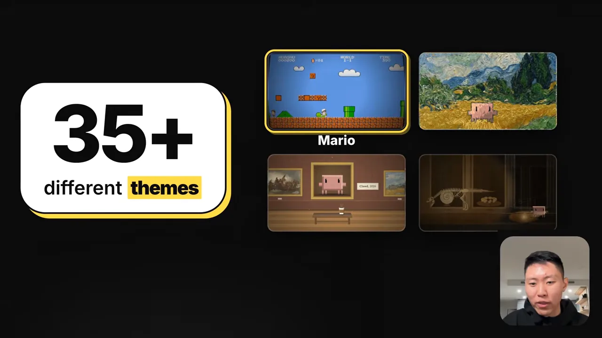
README에는 실제 결과물 샘플이 실려 있어요. 위쪽은 모네풍 일본식 다리 위를 인물이 지나가는 장면이고, 아래 두 칸은 8비트 횡스크롤 게임풍 장면이에요. 발표자가 강조하는 건 이런 캐릭터와 요소를 Claude가 직접 디자인한다는 점이에요. 스킬을 설치하고 사운드트랙만 넘기면 나머지는 스킬이 만들어요.
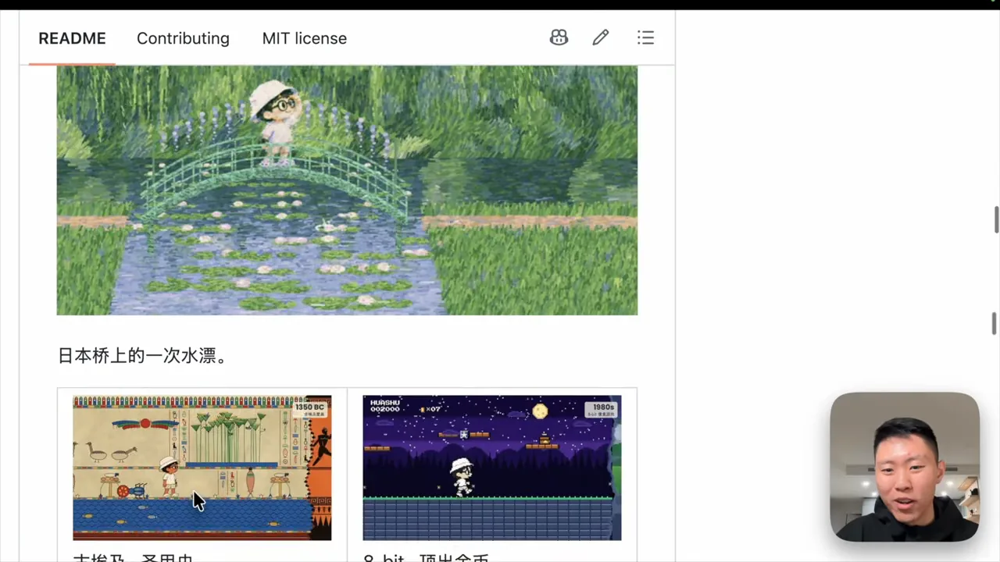
오디오 하나로 만든 뮤직비디오
발표자는 Suno로 만든 노래 한 곡만 넘기고 다른 설명은 하지 않았대요. 테마도 지정하지 않았어요. Claude가 가사를 읽고 어울리는 장면을 스스로 골랐어요. 결과물은 Mia's Bakery라는 빵집 주인이 주문 앱을 부탁하는 이야기로 흘러가요.
먼저 신스웨이브풍 장면이에요. 주황색 픽셀 캐릭터가 지평선의 해를 향해 네온 도로를 달리고, 길가에 pay.ts, orders.sql 같은 파일 이름 표지판이 지나가요. 아래쪽에는 노래 가사 'Claude Code, new road'가 떠요.
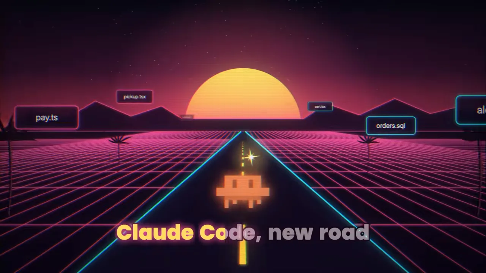
장면마다 그림체가 바뀌어요. 아래는 찢은 종이를 붙인 콜라주풍이에요. 캐릭터가 pickup, pay, done 세 조각을 잇는 길을 걸어가요. 주문 앱의 흐름을 가사 'Got a head full of places to go'에 맞춰 보여 준 장면이에요.
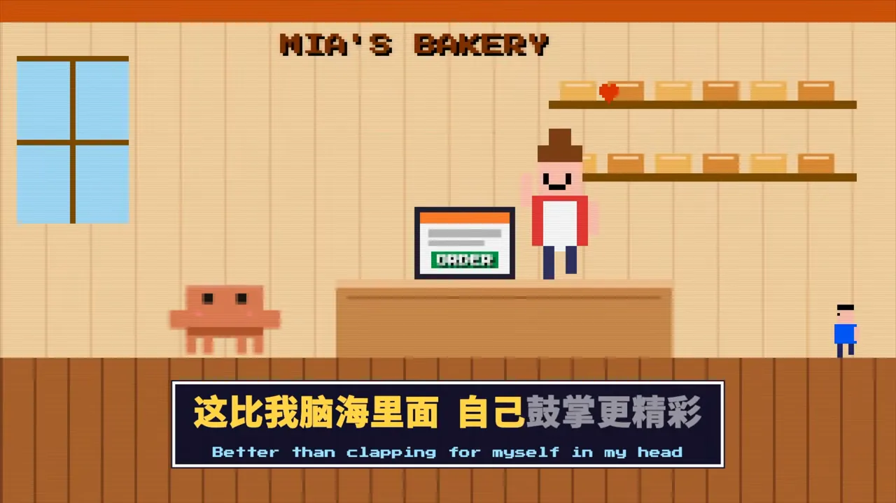
뒤로 가면 앱이 열린 뒤의 모습이 나와요. 수채화풍 마을의 가게 앞에 손님들이 줄을 서 있고, 오른쪽 위 메모에는 '32 orders today'가 적혀 있어요.
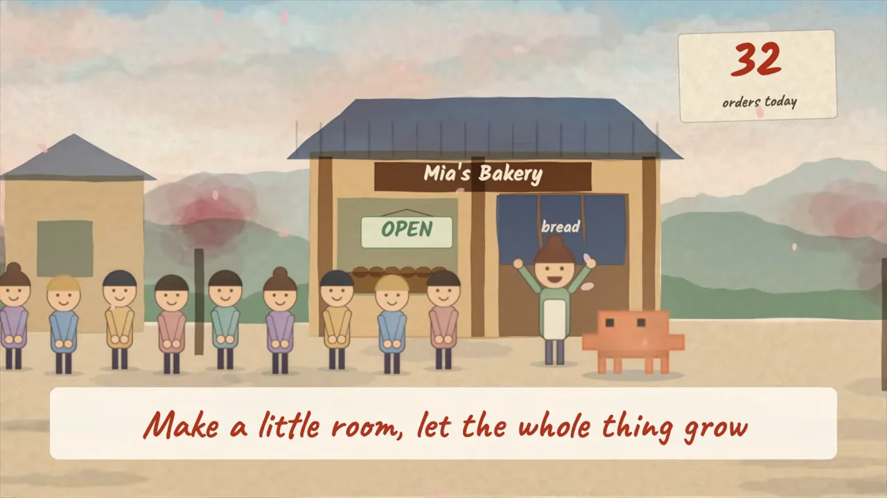
마지막 장면은 다시 네온 격자 위의 터미널이에요. claude를 실행해 'build an order app for Mia's Bakery'를 입력하자 app/menu.tsx, app/cart 파일이 생기는 모습이 담겨 있어요. 빵집 이야기가 결국 Claude Code로 앱을 만든 이야기였던 거예요.
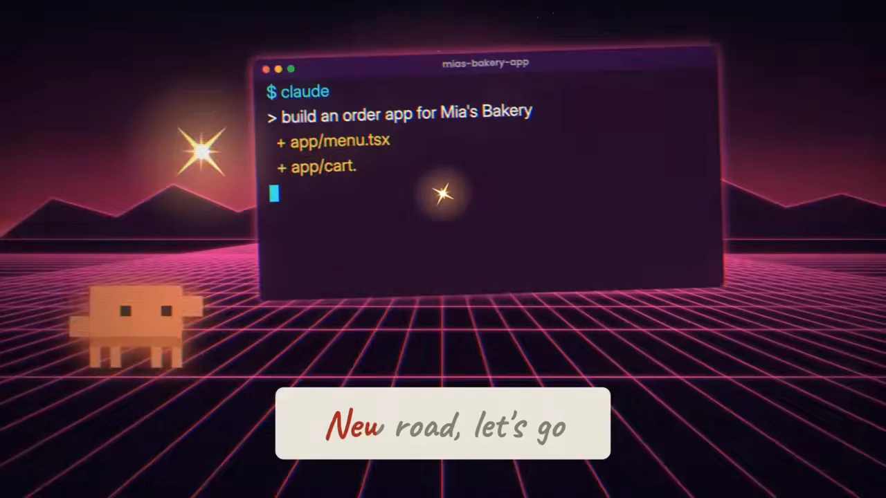
영상 전체로 보면 화풍이 신스웨이브, 손그림, 콜라주, 픽셀 게임, 수채화로 계속 바뀌어요. 화이트보드나 화분 장면처럼 중국어 가사와 영어 번역이 함께 뜨는 곳도 있어요. 발표자는 마무리에서 테마를 고르지 않았다는 점을 다시 짚어요. 아래 슬라이드 위쪽 썸네일 두 장이 앞에서 본 장면이고, 가운데에 'No theme asked'라고 적혀 있어요. 정해 주지 않았는데도 노래에 맞는 화풍을 골랐다는 뜻이에요.
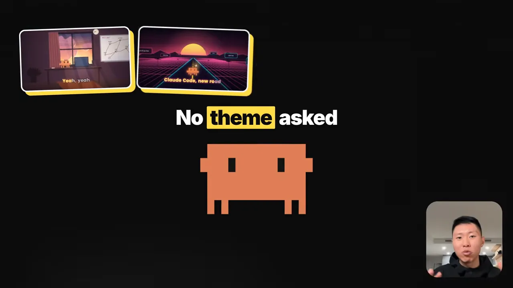
둘 중 무엇을 고를까요
발표자의 정리 슬라이드는 단순해요. 왼쪽 /eric-edit에는 'you have assets', 오른쪽 huashu-art-motion에는 'just the audio'라고 적혀 있어요. 가진 소재에 따라 둘 중 하나를 고르면 돼요.
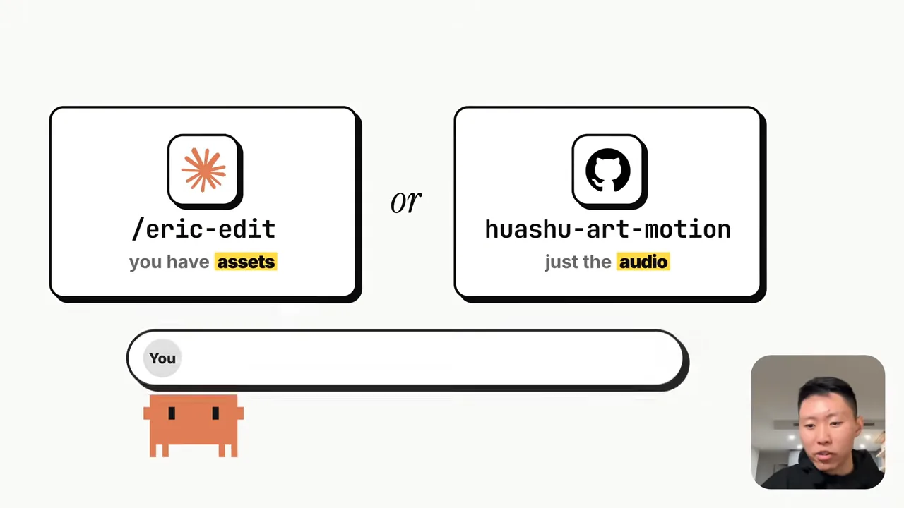
| 상황 | 쓸 스킬 | 넘길 것 | 결과 |
|---|---|---|---|
| 촬영본·B롤·이미지가 있어요 | /eric-edit | 촬영본, B롤, 이미지, 사운드트랙 | 소재를 엮은 편집 영상 |
| 오디오만 있어요 | huashu-art-motion | 사운드트랙 또는 음성 | 캐릭터와 화풍까지 새로 만든 애니메이션 |